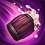
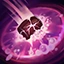

HAPPY HOUR
Gragas periodically heals upon using a skill.
BARREL ROLL
Gragas rolls his cask to a location, which can be activated to explode or will explode on its own after 4 seconds.
The potency of the explosion increases over time.
Enemies struck by the blast have their Move Speed slowed.
DRUNKEN RAGE
Gragas guzzles down brew from his cask for 1 second.
After finishing, he becomes drunkenly empowered, dealing magic damage to all nearby enemies on his next basic attack and reducing damage received.
BODY SLAM
Gragas charges to a location and collides with the first enemy unit he comes across, dealing damage to all nearby enemy units and stunning them.
EXPLOSIVE CASK
Gragas hurls his cask to a location, dealing damage and knocking back enemies caught in the blast radius.